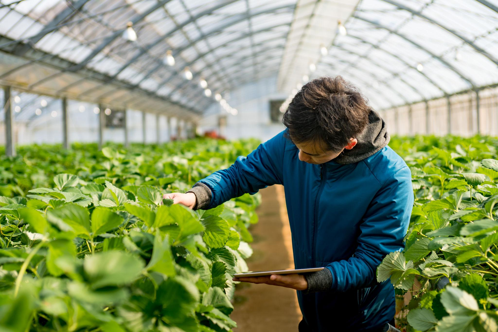
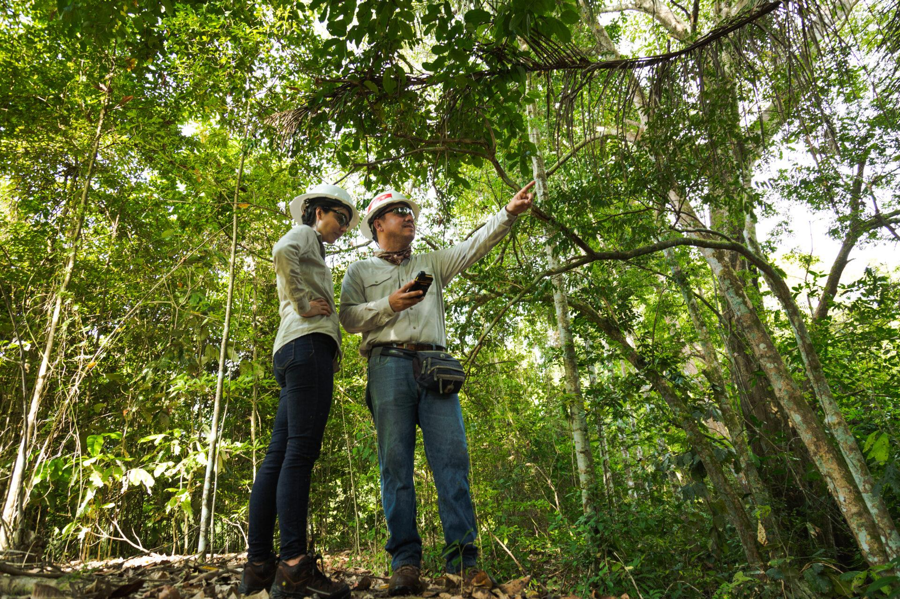
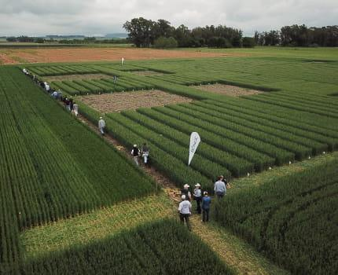

En BIOSUMA acompañamos empresas del sector agropecuario con soluciones regulatorias, ambientales y científicas que generan confianza, cumplimiento normativo y crecimiento sostenible.



Analizamos las necesidades técnicas, regulatorias y ambientales de tu proyecto.
Definimos la mejor ruta para cumplir los requisitos y optimizar tiempos.
Ejecutamos los trámites y coordinamos el soporte técnico necesario.
Hacemos seguimiento hasta el cierre del proceso y brindamos soporte continuo.
Más que una consultora, somos un aliado estratégico que integra conocimiento científico, regulación y sostenibilidad para generar soluciones confiables.
Nuestro equipo combina experiencia en investigación, regulación e innovación para ofrecer soluciones técnicamente sólidas.
Acompañamos procesos ante el ICA y autoridades ambientales, reduciendo tiempos y facilitando el cumplimiento normativo.
Integramos consultoría agropecuaria, ambiental y biotecnológica en una sola solución para nuestros clientes.
Trabajamos junto a cada cliente desde el diagnóstico inicial hasta la ejecución y seguimiento del proyecto.